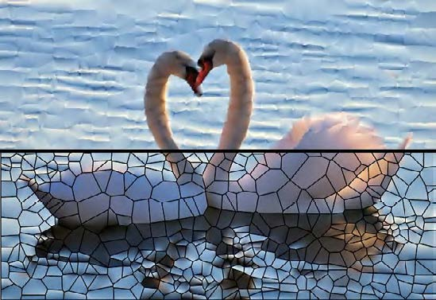

All Publications
 |
Meshless Power Diagrams Yanyang Xiao, Juan Cao, Shaoping Xu, Zhonggui Chen* Computers & Graphics (Proc. SMI), 2023, accept [paper] [code] |
 |
Image Representation on Curved Optimal Triangulation Yanyang Xiao, Juan Cao, Zhonggui Chen* Computer Graphics Forum, 2022, 41(6), 23-36 [paper] [code] |
| TCB-Spline-Based Image Vectorization Haikuan Zhu, Juan Cao*, Yanyang Xiao, Zhonggui Chen, Zichun Zhong, Yongjie Jessica Zhang ACM Transactions on Graphics, 2022, 41(3), Article No.34: 1-18 |
|
 |
Quadratic Serendipity Element Shape Functions on General Planar Polygons Juan Cao*, Yi Xiao, Yanyang Xiao, Zhonggui Chen, Fei Xue, Xiaodong Wei, Yongjie Jessica Zhang Computer Methods in Applied Mechanics and Engineering, 2022, 392: 114703 |
 |
GPU-based Supervoxel Segmentation for 3D Point Clouds Xiao Dong, Yanyang Xiao, Zhonggui Chen*, Junfeng Yao, Xiaohu Guo Computer Aided Geometric Design (Proc. GMP), 2022, 93:102080 |
 |
Merge-Swap Optimization Framework for Supervoxel Generation from Three-Dimensional Point Clouds Yanyang Xiao, Zhonggui Chen*, Zhengtao Lin, Juan Cao, Yongjie Jessica Zhang, Yangbin Lin, Cheng Wang Remote Sensing, 2020, 12(3), 473 [DOI] |
 |
Optimal Power Diagrams via Function Approximation Yanyang Xiao, Zhonggui Chen, Juan Cao*, Yongjie Jessica Zhang, Cheng Wang Computer-Aided Design (Proc. SPM; Best Paper Award 1st Place), 2018, 102:52-60 [paper] [DOI] |
 |
Functional Data Approximation on Bounded Domains using Polygonal Finite Elements Juan Cao, Yanyang Xiao, Zhonggui Chen*, Wenping Wang, Chandrajit Bajaj Computer Aided Geometric Design, 2018, 63:149-163 |
 |
基于重心Delaunay三角剖分的蓝噪声点采样算法 齐若同, 肖艳阳, 曹娟, 陈中贵* 计算机辅助设计与图形学学报, 2018, 30(7), 1205-1215 |
|  | 结合广义重心坐标与Voronoi剖分的函数分片逼近 肖艳阳, 涂锦灿, 陈中贵* 图学学报, 2015, 36(3), 367-375 |
 |
Approximation by Piecewise Polynomials on Voronoi Tessellation Zhonggui Chen, Yanyang Xiao, Juan Cao* Graphical Models (Proc. GMP), 2014, 76(5), 522-531 [paper] |